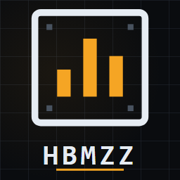

六首曲目，一台钉在右边的机器
主题曲是宣传片正片的配乐，另四首是作者自己写的——它们和模组本身没有音乐层面的关系： 没有背景音乐循环，也没有战斗曲，只活在这个站点上。第六首是《The ending of melting》的作者演唱版： 同一段旋律，作者用自己的声音唱了一遍，和第四首的纯音乐版并列。播放器常驻在处理右侧的那台机器里： 在这一页选好哪一首，翻到指南、手册、更新日志，它接着往下走。
7 分 18 秒，把这套系统讲一遍
片里每一帧都来自模组自己的渲染器：吊装面板是 ConsoleModel 交给游戏的那批
四边形做的正交投影，屏幕画面是 AlertScreen 与 NukeScreen 的真实画布。
没有游戏内录屏——这台机器上跑不起 Minecraft，所以不拿别的整合包的画面来凑。
点哪一首，右边就放哪一首
六行都是同一台机器：这里按下去，右侧竖条上的曲名、时长、进度会一起换过去。 再按一次是暂停，不会跳到别处去。

HBMZZ OST 6 TRACKS · 23:10- 01
- 02
- 03
- 04
- 05
- 06
它们是什么，文件里有什么
后四首来自黑屏导出的纯音频（视频轨抽帧全黑），主题曲来自一条带可视化画面的竖屏 mp4—— 曲子本身没有封面。作者演唱版是从《The ending of melting》的纯人声轨出发、 用作者自己的录音克隆音色重新演唱的：旋律、节奏、伴奏与原版一致，只有主唱换成了作者的声音。 上面那张方形图是站点的品牌封面：一块屏框、一个 H、一道琥珀色横杠， 它属于这个站点，不属于任何一首曲子。下表是文件本身量出来的，不是写上去的。
主题曲
4 分 04 秒，整轨响度 −16.5 LUFS，动态范围 10.0 LU，真峰值 −3.0 dBTP。 这首是宣传片正片的配乐——4 分 04 秒正好是「片头 + 正文」的长度，曲子的段落起伏按分镜写： 1:56 终端段收下来，3:16 起核事故推到最高，3:52 收束，正好把片尾交给下一首。
文件 5,858,438 字节。源文件是一条竖屏 mp4（可视化画面 960×1920）， 音轨抽出转码一次，保持作者交付的原电平；宣传片里用的是归一后的版本。
How to survive?
3 分 15 秒，整轨响度 −15.7 LUFS，动态范围 9.7 LU，真峰值 −1.4 dBFS。 这是站上最早放上来的原声——主题曲来了之后，它排在第二首。
文件 4,696,046 字节，ID3v2.3 与 ID3v1 都写了标题； 音轨从源文件直接转码一次，之后没有再动过。
When will it end?
5 分 17 秒，整轨响度 −16.6 LUFS，动态范围 5.5 LU，真峰值 −1.6 dBFS。 比第一首长近两分钟，压得也更平——动态范围只有它的一半多一点。
文件 7,630,262 字节。源文件是手机导出的 mp4，
里面只写了 com.android.version=17，没有曲名，标题是我按你说的填进 ID3 的。
The ending of melting
3 分 13 秒，整轨响度 −17.5 LUFS——纯音乐里最轻的一首，比主题曲低 1.0 dB。 这个差我没动：母带是作者给的电平，不该由我在这里加增益。
文件 4,653,433 字节。源文件同样是手机导出的竖屏 mp4，
视频轨全程纯黑，meta 里没有任何曲名。
clsys
4 分 05 秒，整轨响度 −16.4 LUFS，动态范围 6.7 LU，真峰值 −2.0 dBFS， 和主题曲基本持平。电平是作者交付的原样，我没有动。
文件 5,901,065 字节。源文件同样是一条竖屏 mp4，
视频轨全程纯黑，音轨抽出转成 mp3，ID3 曲名 clsys。
The ending of melting 作者演唱版
3 分 13 秒，整轨响度 −22.9 LUFS，比纯音乐版低 5.4 dB。它和第四首是同一段曲子： 从原曲分出人声与伴奏，用作者自己的录音克隆音色重新演唱原歌词，再混回原伴奏—— 旋律、节奏、伴奏一字不改，换的只有主唱。
文件 3,975,419 字节。克隆用的参考音频只有几秒， 音色相似度和咬字清晰度受素材限制；这一版追求最像作者的声音，与第四首的纯音乐版并列， 听感可按喜好二选一。
这台机器怎么使
它只有几个零件：播放方块、上/下一首、曲目开关、一条进度槽。没有音量条—— 音量归系统管，页面里不重复造一个。
鼠标与键盘
方块是播放 / 暂停，竖槽点哪儿跳哪儿、按住能拖。聚焦进度条后用 ↑ ↓（窄屏横过来是 ← →）走 5 秒，Home / End 跳首尾， Esc 收起曲目面板。
曲目开关上是「曲目 1/2」，点开浮出两行列表，序号前一道竖线指的是正在放的那首。 上/下一首只切歌，不改变「在不在播」以外的东西。
翻页不会断
站点是六个独立页面，翻页时那一声必然会断——新页面得重新开一个
<audio>，静态站绕不过去。位置按真实时间补回来：离开时记下「哪一首、第几秒」，
新页面重新对上，翻页花掉的几秒也算进去。
浏览器不肯自动出声时先静音续上，在这一页随便按一下就有声；连静音播都不放行， 方块才亮着等你按——总之不会假装在播。离开超过八秒、或隔了半小时才回来，就不替你接着放了。
六枚 MP3 的全部参数
都能直接下载。它们放在站点目录里，不随 jar 分发——装了模组的人在游戏里听不到这几首。
| 曲目 | 时长 | 码率 | 采样率 | 响度 | 字节 |
|---|---|---|---|---|---|
| 主题曲 | 4:04 | 192 kbps | 44.1 kHz | −16.5 LUFS | 5,858,438 |
| How to survive? | 3:15 | 192 kbps | 44.1 kHz | −15.7 LUFS | 4,696,046 |
| When will it end? | 5:17 | 192 kbps | 44.1 kHz | −16.6 LUFS | 7,630,262 |
| The ending of melting | 3:13 | 192 kbps | 44.1 kHz | −17.5 LUFS | 4,653,433 |
| clsys | 4:05 | 192 kbps | 44.1 kHz | −16.4 LUFS | 5,901,065 |
| The ending of melting（作者演唱版） | 3:13 | 164 kbps | 44.1 kHz | −22.9 LUFS | 3,975,419 |
曲目随站点其余内容一样以仓库的 GPL-3.0 提供； 转载、二次使用请保留署名。它们不是第三方素材，也不在模组的资源包里。